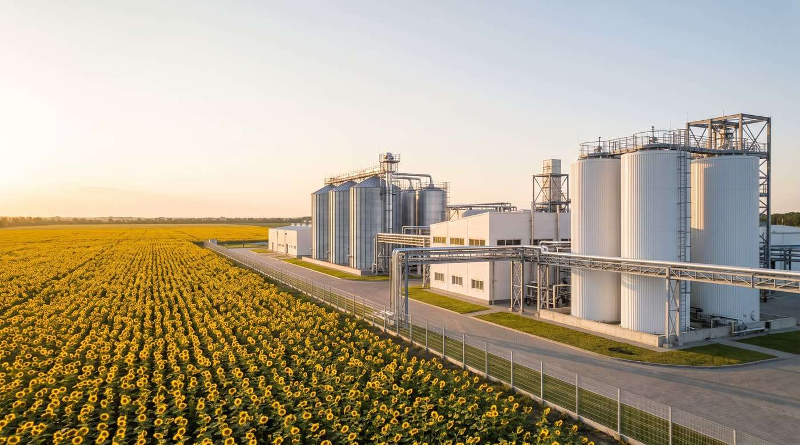
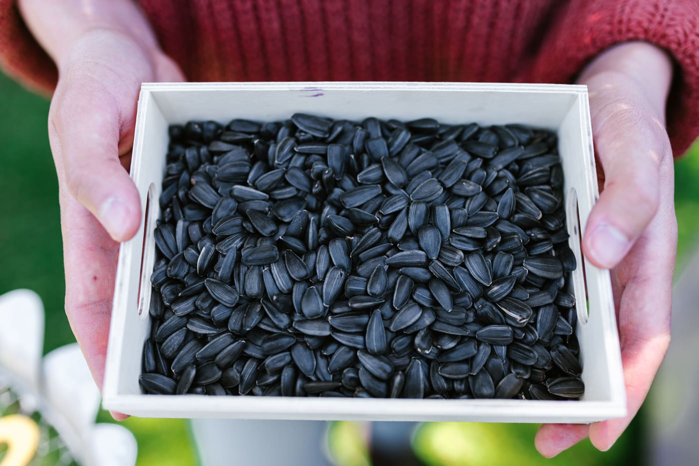

Виробництво
Технологія подвійного віджиму — чистота та якість природного продукту
На заводі Оліяторг ми використовуємо технологію подвійного механічного віджиму: рослинну олію з насіння соняшнику та ріпаку отримуємо без хімічних розчинників. Виробничі потужності дозволяють переробляти 100 тисяч тонн насіння соняшника на рік.

Галерея
Виробництво у фотографіях
Процес
Чотири кроки до якісної олії
-
Приймання сировини
Якість починається з ретельного відбору сировини. Приймаємо насіння від перевірених аграріїв, контролюємо його якість на вході та зберігаємо у власному зерновому елеваторі.

-
Подвійний віджим
Двоетапне механічне пресування забезпечує ефективне вилучення олії з насіння соняшнику та ріпаку. Хімічні розчинники не застосовуються, тож природні властивості сировини зберігаються.
-
Олія та макуха
У результаті ми отримуємо якісну рослинну олію та цінну макуху — поживний компонент кормів для тварин. Лушпиння соняшнику підприємство використовує як паливо.
-
Контроль якості та зберігання
Якість сировини та продукції постійно контролюємо в сертифікованій лабораторії та за допомогою незалежних інспекцій, схвалених GAFTA і FOSFA, зокрема SGS. Готову олію зберігаємо у власних ємностях.
Технології
Якість без хімічної екстракції
-
100 тисяч тонн
Переробка насіння на рік
Потужності заводу в селищі Криве Озеро Миколаївської області.
-
20 тисяч тонн
Зерновий елеватор
Власний елеватор для зберігання насіння соняшника.
-
2 етапи
Подвійне пресування
Механічний віджим без хімічних розчинників зберігає природні властивості сировини.
-
Сертифікована лабораторія
Контроль якості на кожному етапі — від вхідного контролю сировини до готової продукції.
-
GAFTA · FOSFA
Незалежні інспекції
Якість підтверджують незалежні інспекції, схвалені GAFTA і FOSFA, зокрема SGS.
-
Власний транспорт
Власний транспорт, елеватор та ємності для зберігання наливних вантажів.
-
1,8 мегавата
Сонячна електростанція
Працює на підприємстві й допомагає мінімізувати використання викопних видів палива.
-
1,5 мегавата
Власний генератор
Дає змогу працювати без зупинок під час відключень електроенергії
-
Енергетичний острів
Стратегічна мета — максимальна енергетична незалежність підприємства.
Стандарти
Відповідальне виробництво. Сталий розвиток
Екологічна відповідальність, соціальна відповідальність і прозоре корпоративне управління є невіддільними складовими нашої бізнес-філософії. Якість починається з ретельного відбору сировини й забезпечується на кожному етапі виробництва.
Усі сертифікати- ISO 22000 (HACCP) Виробництво нерафінованої соняшникової та ріпакової олії і макухи. Видав TÜV Thüringen.
- Organic EU Органічна олія, макуха та лушпиння соняшнику для ринку ЄС. Орган контролю — Organic Standard.
- NOP (Organic USDA) Відповідність органічним правилам USDA (7 CFR Part 205), категорія Handling. Видав ETKO.
- GMP+ Виробництво кормових матеріалів за модулем GMP+ Feed Safety Assurance 2020. Видав SGS.
- Halal Соняшникова та ріпакова олія і макуха не містять речовин, заборонених шаріатом. Видав Центр сертифікації «Халяль».

- Телефон
- +38 044 228 11 97
- office@oliyatorg.ua
- Співпраця
- Стати партнером